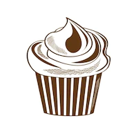

Lasagna
Banana Smoothie
Cup Cakes
How to make a Cupcake

The right amount of sugar with for the kids.Easy to make and
its great for tea(BBC website is where i found the reciped)
Ingredients
- 110g softened butter
- 110g golden caster sugar
- 2 large eggs
- Half a spoon of vanilla extract
- 110g self-raising flour
For the buttercream
- 150g softened butter
- 300g icing sugar
- 1 tsp vanilla extract
- 3 tbsp milk
- Heat oven to 180C/160C fan/gas 4 and fill a 12 cupcake tray with cases.
- Using an electric whisk beat 110g softened butter and 110g golden caster sugar together until pale and fluffy then whisk in 2 large eggs, one at a time, scraping down the sides of
the bowl after each addition
- Add ½ tsp vanilla extract, 110g self-raising flour and a pinch of salt, whisk until just combined then
spoon the mixture into the cupcake cases.
- Bake for 15 mins until golden brown and a skewer inserted into the middle of each cake comes
out clean. Leave to cool completely on a wire rack.
- To make the buttercream, whisk 150g softened butter until super soft then add 300g icing sugar,
1 tsp vanilla extract and a pinch of salt.
- Whisk together until smooth (start off slowly to avoid an icing sugar cloud) then beat in 3 tbsp milk
- If wanting to colour, stir in the food colouring now. Spoon or pipe onto the cooled cupcakes.